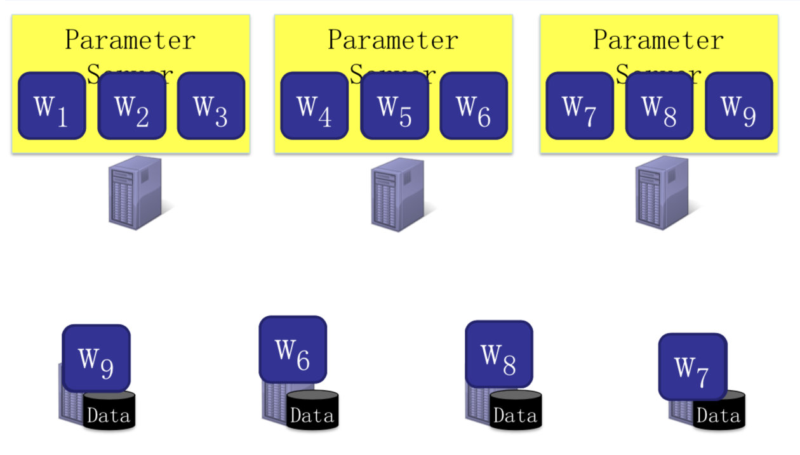
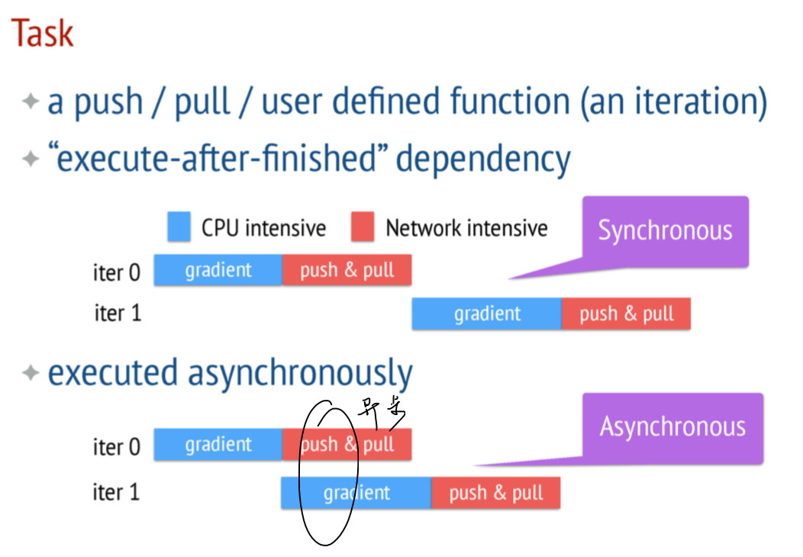

GraphLab简介
是一个以参数为中心的机器学习系统。
Observations
- 某些learning算法的模型复杂，参数很大
- Complex Models with Billions and Trillions of Parameters
- e.g. LDA
- 某些Learning过程呈现线性，需要同步
- Sequential ML jobs require barriers and hurt performance by blocking
- BSP model是我们想要的，但如何平衡性能？
- 容错很重要，尤其是参数的容错
- At scale, Fault Tolerance is required as these jobs run in a cloud where machines are unreliable and jobs can be preempted
- 大规模的机器学习算法参数很多，需要进行容错
设计思路
- 参数与训练数据分开存放
- Server:负责参数
- Worker:负责训练数据
- 提供同步计算与异步计算模式
- 灵活的consistency
- 用户选择
- 参数看作key-value pair进行备份
- Consistent hashing
体系架构

- 主节点用来存放参数
- 取参数是按需pull，再将更新后的参数放回去
计算模式
Asynchronous tasks and Dependency

Flexible Consistency
- Up to the algorithm designer to choose the flexible consistency model
- 其实让编程变得更复杂
- Trade-off between Algorithm Efficiency and System Performance
- 计算考虑
- 异步可能是错的
- 性能方面
- 异步更好
- 计算考虑
容错机制
使用一致性哈希和备份的方式
- 为什么不能用zookeeper？
- 数据量太大
- 前提：这个model是key-value pair，才能够被hash
讨论
- GraphLab和PS中sequential一样吗?
- GraphLab强调数据点之间的顺序计算关系
- PS不考察训练数据点之间的关系，强调多次迭代之间的顺序关系
- GraphLab中的consistency和PS中的 consistency是一样的吗?
- GraphLab中的consistency解决可串行问题
- PS中的consistency解决同步/异步计算问题